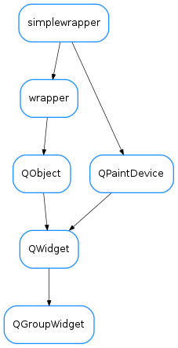

QGroupWidget¶

-
class
QGroupWidget(parent=None, designMode=False)[source]¶ Bases:
PyQt4.QtGui.QWidgetAn expandable/collapsible composite widget
-
DefaultContentStyle= {'stop_color': 'rgb(255, 255, 255)', 'border_color': 'rgb(0, 85, 227)', 'border_radius': '5px', 'start_color': 'rgb(224, 224, 224)'}¶
-
DefaultContentVisible= True¶
-
DefaultTitleBarHeight= 16¶
-
DefaultTitleBarStyle= {'font_color': 'white', 'stop_color': 'rgb(0, 65, 200)', 'border_radius': '5px', 'start_color': 'rgb(60, 150, 255)'}¶
-
DefaultTitleBarVisible= True¶
-
collapseButton()[source]¶ Returns the collapse button widget
Return type: QToolButtonReturns: the collapse button widget
-
contentStyle¶ The style must be a json dictionary
-
contentVisible¶ This property contains the widget’s content’s visibility
Access functions:
-
getContentStyle()[source]¶ Returns this widget’s content style
Return type: dictReturns: this widget’s content style
-
getContentStyleStr()[source]¶ Returns this widget’s content style
Return type: dictReturns: this widget’s content style
-
getTitleHeight()[source]¶ Returns this widget’s title height
Return type: boolReturns: this widget’s title height
-
getTitleIcon()[source]¶ Returns this widget’s title icon
Return type: QIconReturns: this widget’s title icon
-
getTitleStyle()[source]¶ Returns this widget’s title style
Return type: dictReturns: this widget’s title style
-
getTitleStyleStr()[source]¶ Returns this widget’s title style
Return type: dictReturns: this widget’s title style
-
isContentVisible()[source]¶ Returns this widget’s contents visibility
Return type: boolReturns: this widget’s contents visibility
-
isTitleVisible()[source]¶ Returns this widget’s title visibility
Return type: boolReturns: this widget’s title visibility
-
setContentStyle(style_map)[source]¶ Sets this widget’s content style Used key/values for style_map: - ‘start_color’ : brush (Ex.: ‘#E0E0E0’, ‘rgb(0,0,0)’, ‘white’) - ‘stop_color’ : brush (Ex.: ‘#E0E0E0’, ‘rgb(0,0,0)’, ‘white’)
Parameters: style_map ( dict) – the new widget content style
-
setContentStyleStr(style_map)[source]¶ Sets this widget’s content style Used key/values for style_map: - ‘start_color’ : brush (Ex.: ‘#E0E0E0’, ‘rgb(0,0,0)’, ‘white’) - ‘stop_color’ : brush (Ex.: ‘#E0E0E0’, ‘rgb(0,0,0)’, ‘white’)
Parameters: style_map ( dict) – the new widget content style
-
setContentVisible(show)[source]¶ Sets this widget’s contents visibility
Parameters: show ( bool) – the new widget contents visibility
-
setTitleHeight(h)[source]¶ Sets this widget’s title height
Parameters: icon ( bool) – the new widget title height
-
setTitleIcon(icon)[source]¶ Sets this widget’s title icon
Parameters: icon ( QIcon) – the new widget title icon
-
setTitleStyle(style_map)[source]¶ Sets this widget’s title style Used key/values for style_map: - ‘start_color’ : brush (Ex.: ‘#E0E0E0’, ‘rgb(0,0,0)’, ‘white’) - ‘stop_color’ : brush (Ex.: ‘#E0E0E0’, ‘rgb(0,0,0)’, ‘white’) - ‘font_color’ : brush (Ex.: ‘#E0E0E0’, ‘rgb(0,0,0)’, ‘white’) - ‘border_radius’: radius (Ex.: ‘5px’, ‘5px,2px’)
Parameters: style_map ( dict) – the new widget title style
-
setTitleStyleStr(style_map)[source]¶ Sets this widget’s title style Used key/values for style_map: - ‘start_color’ : brush (Ex.: ‘#E0E0E0’, ‘rgb(0,0,0)’, ‘white’) - ‘stop_color’ : brush (Ex.: ‘#E0E0E0’, ‘rgb(0,0,0)’, ‘white’) - ‘font_color’ : brush (Ex.: ‘#E0E0E0’, ‘rgb(0,0,0)’, ‘white’) - ‘border_radius’: radius (Ex.: ‘5px’, ‘5px,2px’)
Parameters: style_map ( dict) – the new widget title style
-
setTitleVisible(show)[source]¶ Sets this widget’s title visibility
Parameters: icon ( bool) – the new widget title visibility
-
title¶ This property contains the widget’s title
Access functions:
-
titleButton()[source]¶ Returns the title button widget
Return type: QToolButtonReturns: the title button widget
-
titleHeight¶ This property contains the widget’s title height
Access functions:
-
titleIcon¶ This property contains the widget’s title icon
Access functions:
-
titleStyle¶ The style must be a json dictionary
-
titleVisible¶ This property contains the widget’s title visibility
Access functions:
-